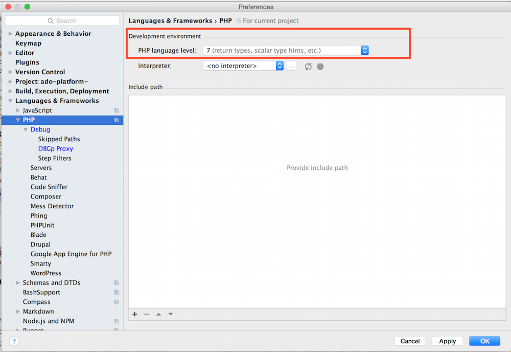

Getting XDebug setup locally with DevTools
Getting XDebug set up can be a bit challenging only because you might not know the locations of files. This guide will walk you through getting setup and will hopefully remove any rabbit-hole fears of using XDebug on your next project!
Steps
1. Make sure DevTools is up to date.
This will not impact XDebug configuration but it's always a good thing to make sure your tools are up to date! Take this opportunity to do a quick check before going on your way to integrating XDebug =)
brew info devtools
You should hopefully see:
phase2/devtools/devtools: stable 0.2.2
Containerized platform environment for projects. See https://phase2.github.io/devtools for documentation.
https://phase2.github.com/devtools
/usr/local/Cellar/devtools/0.1.3 (3 files, 4.3M)
Built from source
/usr/local/Cellar/devtools/0.2.2 (4 files, 4.8M) *
Built from source
From: https://github.com/phase2/homebrew-devtools/blob/master/Formula/devtools.rb
If your output doesn't match do:
brew update
brew upgrade devtools
2. Make sure that you have the correct versions of docker, docker-machine, docker-compose
Currently DevTools has a requirement of specific versions of Docker, Docker Machine, and Docker Compose. These versions aren't the latest versions of these packages. If for whatever reason, you were using another version of any of these items, make sure that you run:
devtools doctor
// You need these versions for DevTools:
[INFO] Docker compatible version 1.9.1 was found
[INFO] Machine compatible version 0.5.4 was found
[INFO] Compose compatible version 1.5.2 was found
Also if you have multiple versions installed, doing brew info docker-compose will list the versions you have installed. The one with the "*" will be the version that is active.
If you need to switch versions, use the brew switch command and run any additional commands like brew unlink .... (The switch command will provide next command steps if you need to link or unlink any formulae).
Example:
brew switch docker 1.9.1
3. Make sure your containers are up to date!
Now it may have been a while since you last updated your containers. Unfortunately, there's no way to subscribe to Docker Hub image updates at this time. So this is something that you might want to do occasionally, like at the beginning of a sprint :D
This is an important step to take to ensure that you have the latest changes in order to properly finish the XDebug setup.
// Stop your containers in case they are running.
docker-compose stop
// Pull the latest changes.
docker-compose pull
docker-compose -f build.yml pull
// Remove your old containers to make sure you're using the latest images.
docker-compose rm
// Re-create your containers based on the freshly updated images.
docker-compose up -d
This is shorthand for something like:
docker pull phase2/devtools-build
4. How is XDebug configuration managed with DevTools?
XDebug setup is controlled by template (.tmpl) files.
The XDebug template file has the following:
; Enable xdebug extension module
{{ $xdebug := getenv "PHP_XDEBUG" }}
{{ if eq $xdebug "true" }}
zend_extension=xdebug.so
{{ end }}
xdebug.coverage_enable=0
xdebug.default_enable=1
xdebug.remote_enable=1
xdebug.remote_connect_back=1
xdebug.remote_host=localhost // < Note: This is ignored because xdebug.remote_connect_back is enabled.
xdebug.remote_port=9000
xdebug.remote_handler=dbgp
xdebug.remote_log=/tmp/xdebug.log
xdebug.remote_autostart=true
xdebug.idekey="DEVTOOLS"
; Drupal 8 requires this be set to 256.
xdebug.max_nesting_level=256
; see http://xdebug.org/docs/all_settings
It is located on the www container @ /etc/confd/templates/xdebug.ini.tmpl. To view the template file, do:
docker ps // Get the list of your running containers
// You should see something like this"
CONTAINER ID IMAGE COMMAND CREATED STATUS PORTS NAMES
9616c845b27d phase2/apache-php:php70 "/init" 56 minutes ago Up 56 minutes 80/tcp your_site_local_www
// Grab the NAME for the container using the "phase2/apache-php:php70" image. In this case it's "your_site_local_www"
// Get a bash shell for the www container:
docker exec -it your_site_local_www bash
// Your bash shell on the www container:
> [root@9616c845b27d /]#
// Checkout the xdebug template:
> [root@9616c845b27d /]# cat /etc/confd/templates/xdebug.ini.tmpl
// Checkout the xdebug.ini file (using the template):
> [root@9616c845b27d /]# cat /etc/opt/remi/php70/php.d/15-xdebug.ini
The template file contents get loaded into this 15-xdebug.ini file because of this .toml file:
[template]
src = "xdebug.ini.tmpl"
dest = "/etc/opt/remi/php70/php.d/15-xdebug.ini"
uid = 0
gid = 0
mode = "0644"
keys = []
Notice the src and dest keys in this file.
5. Overridding the default template from DevTools
Sometimes you need something different, and that's OK! So the way to go about this is to create your .tmpl file and overwrite the one that is setup on the www container by default.
You can accomplish this using a good 'ole volume mount:
In your project directory, create a new folder to hold your custom template file. A nice way to organize your docker customizations is by putting them in a directory called: env/local:
mkdir -p env/local
Create a file named xdebug.ini.tmpl and place your customizations. Note: This file overwrites the original template file completely, so if there are lines you want to keep from the original one, be sure to copy them over to this file.
In your docker-compose.yml file, add the following to the volumes array of your www container:
./env/local/xdebug.ini.tmpl:/etc/confd/templates/xdebug.ini.tmpl
Also, make sure you have the PHP_XDEBUG key set to "true".
Example:
www:
container_name: your_site_local_www
image: phase2/apache-php:php70
environment:
DNSDOCK_NAME: www
DNSDOCK_IMAGE: your-site
DOCROOT: /var/www/build/html
PHP_XDEBUG: "true" // << Make sure you have this line!
links:
- db
volumes:
- .:/var/www/
- ./env/local/xdebug.ini.tmpl:/etc/confd/templates/xdebug.ini.tmpl // << ADD THIS LINE
- /data/your_site_local/files:/var/www/build/html/sites/default/files
This tells docker to use your custom template file and place it in the /etc/confd/templates/xdebug.ini.tmpl location on the www container, effectively overwriting it.
If you make adjustments to your template file while your www container is running, you will have to restart your containers to apply your changes
docker-compose restart
or
docker-compose restart www
6. Final Steps - Let your IDE know about XDebug on your www container.
Depending on the IDE you use, the final steps for integrating your XDebug setup with your local environment and your IDE will differ. Here's some steps on how to accomplish this using PHPStorm:
1. First of all, you'll to add some settings for your project. Click on the wrench icon in the toolbar:

You can also get to the project settings by going to: PHPStorm > Preferences (OSX) or File > Settings (Windows, Linux).
2. Adjust the PHP Project settings.
Make sure you have the correct version of PHP selected:

3. Adjust the Debug Project settings.
- Make sure that the XDebug Debug port matches the one in the xdebug template file.
- Accept external connections

4. For the DBGp Proxy, just ensure that the port is the same.
You can leave the other settings blank.

5. Adjust the Server Project Settings.
Create a new Server by clicking on the "+" button. Give your server a name and input the host.
Be sure to add the docroot mappings. The example shown here is using the Grunt Drupal Tasks project structure. There are two mappings in this case. One for the docroot (build/html) and the other for the src directory so that breakpoints can be set in the custom modules in the src directory as well.

5. Validate your debug settings.
Select the "Web Server Debug Validation" option from the "Run" menu option.

This will display a dialog window that allows you to validate your settings. Make sure that your "Path to create validation script" points to your project docroot and the url is your project url.
If all goes well, clicking the "Validate" button should give you something like this:

Click the dialog 'x' (close) button to close this dialog window.
6. Restart PHPStorm.
In order to ensure that all your settings are applying, you will need to restart PHPStorm.
7. Make sure that you listen for connections!